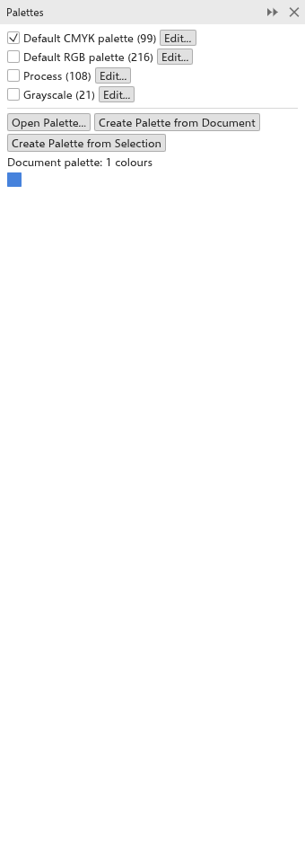

Tavolozze dei colori
La tavolozza dei colori lungo il fondo della finestra è il modo più rapido per colorare gli oggetti. Sotto di essa, la tavolozza del documento raccoglie i colori usati dal disegno. Puoi aprire altre tavolozze, crearne di tue e modificarle.
Usare la tavolozza
| Azione | Risultato |
|---|---|
| Clic su un colore | riempie la selezione (senza nulla di selezionato, imposta il riempimento dei nuovi oggetti) |
| Clic destro su un colore | colora il contorno della selezione |
| Ctrl+clic su un colore | ne mescola un decimo nel riempimento della selezione |
| Clic prolungato su un colore | mostra sue sfumature più chiare, più scure, più spente e più brillanti tra cui scegliere |
| Trascinare un colore su un oggetto | riempie l'oggetto, o ne colora il contorno se rilasciato sul bordo |
| Clic sulla casella barrata | rimuove il riempimento (clic destro: il contorno) |
Le frecce alle estremità scorrono la tavolozza e il pulsante all'estremità destra mostra tutti i colori insieme. Passa il puntatore su un colore per vederne il nome e i valori. Il pulsante del menu della tavolozza all'estremità sinistra apre il menu della tavolozza.
La tavolozza può essere spostata su un altro bordo della finestra o resa mobile: trascinala dalla sua maniglia tratteggiata.
La tavolozza del documento
Ogni colore che applichi a un oggetto entra nella tavolozza del documento, che viene salvata con il disegno. Il suo contagocce aggiunge il colore sotto il puntatore e il suo menu contiene Aggiorna automaticamente (per smettere di aggiungere colori da sola), Aggiungi dalla selezione, Aggiungi dal documento, Elimina colore e Reimposta tavolozza (mantiene solo i colori che il disegno usa ancora). Puoi anche trascinarvi sopra colori o oggetti. Per mostrarla o nasconderla, vedi Opzioni di personalizzazione.
Il pannello Tavolozze
Il pannello Tavolozze elenca le tavolozze che hai, con il numero di colori di ciascuna. Aprilo con Finestra > Tavolozze dei colori > Gestione tavolozze.

- Spunta una tavolozza per mostrarla sotto la finestra di disegno.
- Modifica la apre nell'editor delle tavolozze.
- Apri tavolozza apre un file di tavolozza (
.tdpal,.gpl,.aseo.aco). - Crea tavolozza dal documento e Crea tavolozza dalla selezione creano una tavolozza dei colori usati nel disegno o nella selezione.
- I colori della tavolozza del documento appaiono in fondo; fai clic su uno per riempire la selezione, clic destro per colorarne il contorno.
Modificare una tavolozza
Finestra > Tavolozze dei colori > Editor tavolozze apre l'editor delle tavolozze.

- Scegli la Tavolozza da modificare, o fai clic su Nuova per iniziarne una.
- Digita il suo Nome.
- Fai clic su un colore per selezionarlo; Aggiungi colore aggiunge il colore corrente e Rimuovi colore rimuove quello selezionato.
- Fai clic su Salva tavolozza per salvarla come file.
- Fai clic su Chiudi.
Le tavolozze integrate non possono essere modificate; crea una nuova tavolozza o modificane una copia.